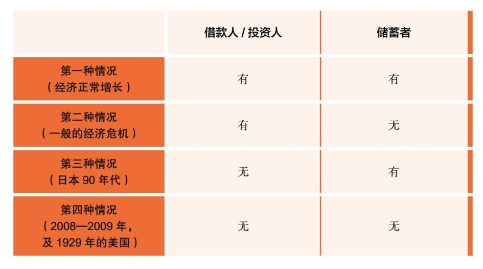

今年我想给大家推荐的书是辜朝明先生所写的《大衰退年代：宏观经济学的另一半与全球化的宿命》。
这本书讨论的全都是当今世界最大的问题。第一：货币政策。基本上今天所有的主要经济体，如日本、美国、欧洲、中国都在大规模地超发货币。基础货币的超发现在已经达到了天文数字，造成了全世界范围内的低利率、零利率甚至在欧元区出现的负利率，这些现象以前在历史上从未发生过。同时，货币增发对经济增长的贡献又微乎其微，除了美国之外，主要发达国家的经济基本都是微增长或是零增长。这种局面造成的另一个结果就是各国的债务水平相对于GDP的倍数越来越高，同时所有的资产价格，从股票到债券，甚至房地产，都处在历史的高点。这种非正常的货币现象到底会持续多久？会以何种方式结束？结束时对全球的资产价格又意味着什么？没有人能够回答这些问题，但是几乎每个人的财富都与此密切相关。
第二：全球化。过去几十年的全球化，让处在不同发展阶段的国家的命运紧密地联系在一起，但是全球贸易和全球资本流动又和各国自己独立行使的货币政策、财政政策是互相分离的。所以全球化和全球资本流动与各国自己的经济政策和国内政策形成了相当大的冲突，也让国家之间的关系日益紧张。比如现在我们看到的日益加剧的中美贸易冲突，比如全球许多国家、地区内部的不稳定，从香港到巴黎，再到智利，各个地方的街头政治日益激烈。同时在这些国家内部，极左和极右的政治势力逐渐取代了中间力量，让整个世界都变得更加不确定。在这种情况下，未来全球的贸易和资本流动会是何种状况，也没有人能预知。
第三：在这样的国际环境下，各个国家的宏观经济政策、财政政策应该如何应对？处在不同发展阶段的不同国家的政策应该有什么样的不同？
三个问题涉及的都是当今世界的头等大事。能回答其中任何一个问题的理论，大概都是值得尊重的学术成就，而同时回答三个问题几乎是个不可能完成的任务。辜朝明在这本书中，确实提供了一个比较令人信服的视角，提出了一些基本的概念和内部逻辑完整的理论框架，在这三个问题上虽然不能说给出答案，但都至少给了我们非常重要的启发。无论你对他的理论同意与否，都值得深思。
现在说说作者辜朝明。他是野村证券研究院首席经济学家，在过去30年对日本政府有广泛影响。我第一次听到他大概是十几年前，在日本的一次YPO国际会议上。他在会议上做了一个主旨演讲，解释当时日本所谓的“失去的十年”（当然现在已经是“失去的二十年”，甚至是“失去的三十年”了）。辜朝明解释了日本泡沫破裂之后的现象，也就是经济的零增长、货币超发、零利率、大规模政府赤字、债务高砌等经济现象。对于这些现象，西方有着不同的解读，但基本上都认为是日本宏观经济政策的失败所导致的。但是辜朝明第一次给出了另一个完全相反但又比较令人信服的解读。他提出了一个自己独特的经济学上的新概念——资产负债表衰退。他把当时日本的经济衰退，归结为在资产泡沫破裂后，由于私人部门（企业与家庭）资产负债表从急剧膨胀到急剧衰落所引起的经济大衰退。在资产负债表引起的经济大衰退中，他提出了一个最独特的看法，就是整个私人部门的目标已经发生了根本性变化，不再是为了追求利润的最大化，而是追求负债的最小化。所以这个时候，无论货币的发行量有多大，私人部门和个人拿到了钱第一件事不是去投资和扩张，而是去偿付债务。因为当时资产价格的急剧下降，让整个私人部门和家庭其实都处在一个技术性破产的状态下，所以他们要做的事情，他们修补资产负债表的方式，就是不断地去储蓄、去还债。这种情况下，经济必然会引起大规模的萎缩。这种萎缩就像30年代美国的经济危机一样，因为经济一旦开始萎缩，它就会有一种自发性的螺旋式的加速进行的机制。在30年代大萧条时期，短短的几年内，整个美国经济萎缩了将近46%。
日本政府采取的办法就是大规模地发行货币，然后通过政府大规模的借债，直接投资基础设施来消化居民大规模的储蓄。通过这种方法，日本在十几年里让经济维持在同一水平。经济虽然是零增长，但也没有发生衰退。在辜朝明看来，这是唯一正确的宏观经济政策选择。日本经济也因此没有经历像美国30年代那样的大规模的、高达46%的缩减，同时又给了私营部门足够的时间去慢慢修补资产负债表。所以到了今天，私营部门和家庭开始恢复到正常，当然代价就是政府的资产负债表的严重受伤，日本政府的债务今天是全球最高的。但是它相对于其他选择，仍然是一个最好的政策选择。这是当时我听到的关于日本的最与众不同的一种解读。此后对日本经济的观察在某种程度上也印证了他的想法。
西方对于日本的政策一直持批评态度，直到2008—2009年这次西方经济大衰退之后，才对日本的态度发生了变化。因为2008—2009年之后，整个西方一下子进入到和日本在80年代末遇到的大泡沫破裂之后非常相近的情况。这个时候，西方主要的资产也开始急剧贬值，整个私营部门陷入了技术性破产，所以后来的情况也都非常相似。主要西方国家不约而同采取的政策都是大规模地超发货币。这时影响西方央行的主要经验是30年代的大萧条。在总结30年代对待经济大危机政策的时候，经济学界主要的结论是以弗里德曼（Milton Friedman）的观点为主，认为货币政策发生了根本性的错误。2008年时的美联储主席伯南克（Ben Bernanke）是这一观点的坚决支持者。他甚至认为在极端情况下，可以从直升机上直接撒钞票。所以在应对2008年危机时，西方国家开始进行了大规模的货币超发。但是与预期不同的是，货币超发的结果并没有带来经济增长的迅速恢复。这些大量超发的货币其实被私营部门重新储蓄下来，用于偿还债务了，所以经济增长依旧乏力。除了美国有部分少量的经济增长之外，欧元区经济基本上仍处在零增长的边缘。
对此，政府的第一反应仍然是加大货币的增发，为此各国央行甚至发明了从未被使用过的量化宽松（QE）。传统上央行通过调节准备金（基础货币最重要的部分）来调节货币供给。在实行QE后，美联储创造的超额准备金达到了法定准备金的12.5倍。在随后，西方主要央行纷纷跟随使用QE之后，相应的倍数分别达到了欧元区9.6倍，英国15.3倍，瑞士30.5倍，日本32.5倍！也就是说，在正常经济情况下，如果私人部门可以有效使用这些新增货币，通货膨胀可以达到同样的倍数（比如美国1250%）。或者说如果这些货币进入资产投资，可以让资产价格急剧上升数倍至泡沫水平，亦或是强烈刺激GDP增长。
但是实际的情况是经济仍然只是微弱增长，部分资产价格逐渐上升，这一政策造成的最大后果是接近零利率，甚至在欧元区造成了今天大概15万亿美元的负利率。这让整个资本主义市场机制的根本性假设发生了动摇，而与此同时，却没有带来所预想的经济增长。此时，整个欧洲的现象就开始和当初的日本越来越像。大家开始重新思考日本的经验。辜朝明对于日本的总结、日本在财政政策上的做法重新引起了西方主要国家的兴趣。
辜朝明用了一个比较简单的框架来解释这些现象。他说依据经济中的储蓄与投资行为，一个经济总会处在下述四种情况中的一种，如表7所示。

正常情况下，一个经济体中应该既有人储蓄，也有人借款投资。这样经济处在一个比较正向的增长的状态。当一般的经济危机到来的时候，储蓄者没钱了，但是还有借款人（投资人），还有投资机会，这种情况下，央行作为最后的货币提供者就非常重要。这就是30年代大萧条的重要结论，就是央行作为最后的出借人，是最后的资金提供者。由它来提供资金，然后贷给私人部门。
但是，大家没有想到的是以前没有出现过的第三种、第四种情况，也就是当借款人（投资人）缺失的情况下经济会是什么情况？比如说在日本，有储蓄者，但是在过去这几十年里，私营部门没有动力去借款投资，这种情况应该怎么办？到了2008-2009年，整个西方的情况是既没有储蓄者，也没有借款人，储蓄者本身在危机发生时就没有了，在美国基本没有储蓄，资产又大规模地下降，所以私人部门基本都处在技术性破产的情况下。同时，在欧洲基本上也没有投资机会，做了几轮QE之后，基础货币大规模超发，仍然没有人愿意去投资，经济中没有投资机会。人们拿到钱之后又以负利率的形式反交给银行。这种情况以前从未发生过。
辜朝明的基本研究框架的主要贡献是第三种和第四种情况，也即借款人缺失的情况下的一些现象。比如说日本，属于第三种情况，有人储蓄，但是没有人借款。这种情况下，他认为政府必须要承担最终借款人的责任，通过财政政策，由政府直接投资。因为如果不这么做，私营部门不愿意去做借款人，经济就会开始萎缩，而一旦经济开始萎缩，它本身会有一种螺旋、加速的机制。这种加速甚至能导致经济减半，大规模失业，引起的社会后果不堪设想。我们知道在30年代希特勒上台、日本军国主义复活都和当时的经济大萧条直接相关。
第四种情况就是2008-2009年发生的情况，既没有储蓄者，也没有借款人。此时，政府应该既充当最后的资金提供者的角色，同时也要充当最终借款人的角色。对美国来说，2008-2009年时它一方面通过央行超发货币，一方面财政部通过TARP法案，给所有系统性重要商业及投资银行直接注资，这样同时解决了储蓄及投资人双缺失的问题，稳住了经济。而西欧直到今天可能还处于第三种甚至是第四种情况，既没有储蓄者，也没有借款人，而又因为欧元区本身的限制，欧洲只可以使用货币政策，欧元合约限制了欧洲尤其是南欧国家使用财政政策扩大内需，这种限制将来可能会造成灾难性的后果。
辜朝明用以上框架分析了今天世界面临的独特的经济现象（第三种和第四种情况），对于目前发达国家的经济政策也提出了自己的一些看法。
接下来他还考虑了这个问题：为什么西欧和美国都走向了资产泡沫？而且又在资产泡沫破裂后都没有找到增长的途径（除了美国还有比较微弱的增长）？为了回答这个问题，他在书中提出了我认为是第二个比较独特的视角。这个视角对于今天的中国尤为有意义。他提出了经济发展在全球化贸易的背景下有三个不同的阶段。
首先我们先介绍一下在发展经济学中一个重要的概念——刘易斯拐点。在城镇工业化早期，农村的剩余劳动人口不断被吸引到城市工业中，但是随着工业发展到一定的规模之后，农村剩余劳动人口从过剩变到短缺，经济进入全员就业的状态。这个拐点就被称为刘易斯拐点。这一观察最早由英国经济学家威廉·阿瑟·刘易斯（W. Arthur Lewis）在50年代提出。第一个阶段是刘易斯拐点到来之前的早期城镇工业化过程。第二个阶段是经济过了刘易斯拐点之后，社会进入到一个储蓄、投资、消费交互增长的状态，又被称为黄金时代。第三个阶段，也就是辜朝明提出的一个独特阶段，是在全球化背景下，经济体在经过成熟发展期，进入到发达经济阶段后，会进入到被追赶阶段。为什么会出现这种情况呢？因为在这个时期，国内的生产成本增加到一定水平后，在海外的其他发展中国家投资就变得更有优势。早期时，在海外投资的优势因为各种文化、制度上的障碍显得不是很清晰，但当国内生产成本高到一定程度的时候，而且在其他国家建立起海外投资的一些基本能力之后，在海外的投资就变得比国内投资远有益处。这时，资本就会停止在国内投资，国内工资也将开始停滞不前。
第一个阶段中，也即刘易斯拐点到来之前的早期城镇工业化过程中，资本拥有绝对的掌控力，劳工一般很难有定价权和讨价还价的能力，因为农村里有很多剩余人口，找工作的人很多，企业自然就会剥削工人。
第二个阶段，也就是过了刘易斯拐点之后，进入到经济发展的成熟阶段，这时候企业需要通过提高对生产设备的投资以提高产出，同时满足雇员的需求，增加工资，改善工作环境和生产设备等等。在这个时期，因为劳动人口已经开始短缺，经济发展会导致工资水平不断上升，工资上升又引起消费水平上升，储蓄水平和投资水平也会上升，这样公司的利润也会上升，形成了一个互相作用、向上的正向循环。这个阶段中，几乎社会中的每个人都能享受到经济发展的成果，同时会形成一个以中产阶级为主的消费社会，即使是教育程度不高的人，工资也在增长，社会各个阶层的生活水平都在提高。所以这个阶段也被称为黄金时代。
到了第三个阶段，社会开始出现分化。对于劳动力来说，只有那些技术含量比较高的工作，比如科学技术、金融、贸易、国际市场类会继续得到很好的工作回报，那些教育程度比较低的传统制造业工作的工资会逐渐下降。社会的贫富差距进一步扩大。国内的经济、投资机会逐渐衰竭，投资机会被转移到了海外。这时GDP增长主要依靠持续的科技创新。如果这方面能力比较强（如美国），GDP仍会低速增长；如果创新能力不强，创新速度不快（如欧洲、日本），则本国经济增长乏力，投资转移到海外或非理性领域。
辜朝明认为西方社会大概在70年代进入到第三个阶段，当时主要被日本和亚洲四小龙追赶。到了十几年之后的80年代，中国开始进入到国际经济循环中，日本也开始进入到被追赶阶段。处在被追赶阶段后，国内经济增长机会急剧减少，经济增长就比较容易进入到那些易形成泡沫的领域中，无论日本、美国还是西欧都是如此，资金先后进入到房地产、股市、债市及衍生证券中，造成了巨大的泡沫形成和之后的泡沫破裂。泡沫破裂之后，因为本身国内经济增长机会仍然有限，增长的潜力仍然很少，所以私营部门一方面为了修补自己的资产负债表，另一方面也缺少投资机会，其经济行为不再是以追求利润最大化为主要目标，而是转变为以追求债务最小化为主要目标。这样，基于传统经济学理论的一些预测基本上都失灵了。
辜朝明指出，在经济发展的不同阶段，政府的宏观政策会有不同的功用，因而需要使用不同的政策工具。这一看法对中国当前是最有启发意义的。在早期工业化过程中，经济增长主要是靠资本形成、制造业、出口等等。此时，政府的财政政策会发挥巨大的作用，政府能把有限的资源集中起来，投资到基础设施、资源、出口相关服务等，这些都有助于新兴国家迅速进入工业化状态。几乎所有国家在这一阶段都采取了积极的政府扶持政策。进入到第二阶段，经济增长的主要动力是工资和消费的双增长，因为这个时候社会已经全员就业，所以基本上任何一个部门、领域只要增加工资，其他部门和领域的工资必然也会发生刚性的增加。工资增加引发消费和储蓄增加，而企业为增加产出会使用这些储蓄增加设备投资，从而实现利润增长，因而更加有能力以增加工资的方式吸引更多员工，如此反复循环，呈现出一种正向、互相追赶式的增长。这种增长主要来自国内经济的自发增长，此时起到决定意义的主要是处在市场前沿的企业家及个人、家庭的投资、消费行为，因为他们更能把握市场瞬息万变的商机。所以这个时候最有效的是货币政策而非财政政策，因为财政政策和私人投资都来自于有限的储蓄，而且财政政策用得不好还会造成和私营部门的投资互相冲突、互相竞争资源和机会。到了第三阶段，也就是被追赶阶段，财政政策又变得很重要。因为国内投资环境恶化，投资机会减少，私营部门因海外投资收益更高，而不愿意投资国内，但国内仍然有很多储蓄。此时由政府出面，例如像日本的这种方式，大规模进行社会投资，投资于基础设施、基础教育、基础科研等等，虽然利润不高，它可以弥补国内的私营部门投资不足，居民储蓄过多而消费不足，这样可以保障社会就业，维持GDP水平不进入螺旋式下跌，更加适合这一阶段的经济发展。反而货币政策在这一阶段会常常失灵。
对宏观政策使用方面的讨论对中国现在的发展非常有意义。虽然不同观察者提出的观点不同，但大体上中国应该是在过去一些年中已经越过了刘易斯拐点，开始进入到成熟的经济发展状态。我们看到过去10年里工资水平、消费水平、储蓄水平、投资水平都呈现出加速增长的趋势。但是通常因为政府的惯性比较强，所以当经济发展阶段发生变化时，政策的制定和执行会有一个滞后效应，常常仍然停留在上一个发展阶段的成功经验中。这些宏观政策和经济发展阶段错位的现象在各个国家各个阶段都有发生。比如说，在今天的西方，宏观政策还是停留在黄金时代比较有效的货币政策，但从实际的结果来看，这些政策有效性很低，以至于到今天很多西方国家，尤其是欧洲和日本在货币超发、零利率甚至负利率的情况下，通货膨胀率还仍然很低，经济增长仍然极其缓慢，债务剧增。同样地，当中国经济已经开始进入到后刘易斯拐点的成熟阶段后，政府还是比较侧重于第一阶段中的财政政策。我们在过去几年中看到的关于经济改革的一系列举措，虽然说初衷是好的，是为了调整前一阶段经济工业化、制造业大发展带来的存量问题，但在实际执行结果上造成了民营企业大规模的加速倒闭，客观上形成了一定程度上的国进民退现象，最重要的是伤害了民营企业家的信心，因此也引起了一定程度上的动荡和消费者信心不足，减低了这一时期潜在的经济增长水平。
今天中国的净出口对GDP增长的贡献已为负数，而消费贡献了70-80%，其中私人消费尤为重要，是今后中国经济增长最根本的动力。在黄金时代中，最重要的是企业家和消费者个人。所有的政策的侧重点、出发点都应该聚焦在如何增强企业家的信心，如何建立比较清廉、公正、规范的市场规则，如何减少政府对于经济运行的权力，简政放权，减轻税务，减少负担。从其他发达国家在黄金时代的经验上看，货币政策在这一时期更为重要。
在第一阶段中，中国主要的货币政策是间接金融的模式，几乎是强制性的大规模储蓄，然后由政府控制的银行体系把资本大规模、低成本地导入到制造业、基础设施、出口等国家战略产业中，这一政策对于中国快速的工业化是成功的。第二阶段中，一个主要的方向应该是如何让整个社会的融资方向、方式能逐渐从上述体系中解放出来，从间接金融转向直接金融，让民营企业家、个人消费者能有机会成为主要的最终借款人。我们看到过去几年中，已经开始出现这方面的松动，比如说借助于金融科技，我们看到消费信贷已经有了初步的发展。当然长期来说，能不能把房地产抵押贷款做得更好，释放二次再抵押贷款的潜能，都是很值得研究的问题。在金融中如何扩大直接金融的比例，加快注册制，增强股市对民营企业融资的能力，债券市场、股权市场的建立等等，都是这一阶段宏观政策中最重要的工具。另外，政府的职能是否能从指导经济转到辅助、服务经济，权力上进一步削减，也都是这一阶段宏观政策上最大的考验。
过去这几年，虽然一些宏观政策的初衷都很好，但因其是行政手段，最终的实际结果不尽如人意。在很大意义上，这也提供了研究观察这一阶段经济特征的另一个视角和教训。在第二个阶段黄金发展期，有一些政策如果通过市场自发来调节，可能效果会更好。相反，人为的做法可能会揠苗助长。这些都是对于中国目前最重要的课题。
现在日本、西欧、美国等国家处于第三阶段，而中国仍然处在第二阶段，中国未来的增长潜力还是很大的。中国人均一万美元的GDP水平，对于西方发达国家仍然具有成本优势，而后面的其他新兴发展中国家（如印度等）还没有形成系统性的竞争优势。中国可能在相当长一段时间内都会处在黄金发展的机遇期。今天中国人均GDP在一万美元左右，但人均GDP达到两万美元的人口已经超过一亿，主要分布在东南沿海城市。其实中国从人均GDP一万美元向两万美元的跃进，并不需要最先进的科技，只需要将东南沿海城市的生活水平、生活方式大规模向内陆传播。这就是消费增长的动力，最主要的动力就是“邻居效应”。别人的东西、别家的东西我也想要有，再加上电视、网络等媒体传播，把东南沿海一亿人口的生活方式传播到其他的十几亿人，就达到了人均GDP两万美元。今后若干年，中国的工资水平、储蓄水平、投资水平和消费水平还会呈现相互追赶的、螺旋上升的状态，处在一个互相促进的正向循环中，投资机会仍然非常丰富、优异。如果中国能够学习西方国家在黄金时代的货币政策，对政府和市场的关系做一些调整，对释放其经济增长潜力将会大有益处。另一方面，西方尤其是西欧如果能学习日本（包括中国）的一些财政政策上的有益经验，让政府承担更多最终借款人的角色，更大规模进入基础设施、基础教育、基础科研的投资，则对西方发达国家在第三阶段被追赶时期维系经济增长也会有好处。
在经济发展的不同的阶段采用不同的政策方式和工具，这本身对经济学也是一个很大的贡献。经济学不是物理学，不存在一成不变的公式和定理，它必须要研究现实中不断变化的经济现象，提出适合这个时期的最重要的政策。所以从这个意义上来说，这本书中的理论框架对于经济学研究本身是一个突破，一个有益的尝试。
当然这本书要回答的这三个问题都是现今世界上最困难、也最重要的问题，不太可能有完美的解答。作者对日本的经验了解比较深，书中的很多观点也都以此为出发点，但日本的经验是否真的适用于欧洲国家和美国，也有待商榷。量化宽松、货币超发、零利率及负利率、高资产价格、社会贫富不均、民粹政治崛起——这些主要由发达国家引发的国际现象仍会在相当长的时间里困扰所有国家的政策制定者及普通民众。对于中国而言，因为目前仍处于后刘易斯拐点的黄金发展期，而已经过了这一阶段的西方及日本等发达国家为这一阶段的经济政策，尤其是货币政策留下了丰富的参照经验。只要政策制定者能够认清目前自身所处的阶段，做出适当的调整，就有可能充分释放黄金发展期巨大的经济增长潜力。中国未来前途依然可期。
2019年11月